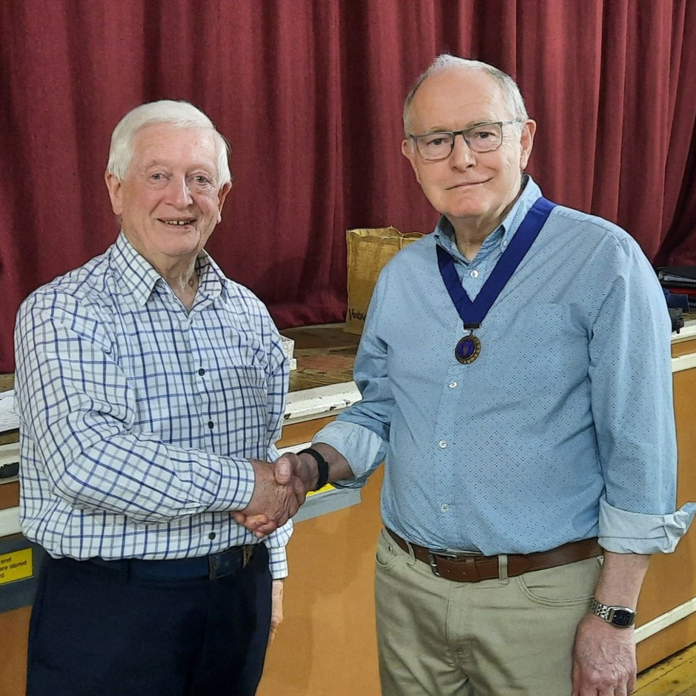
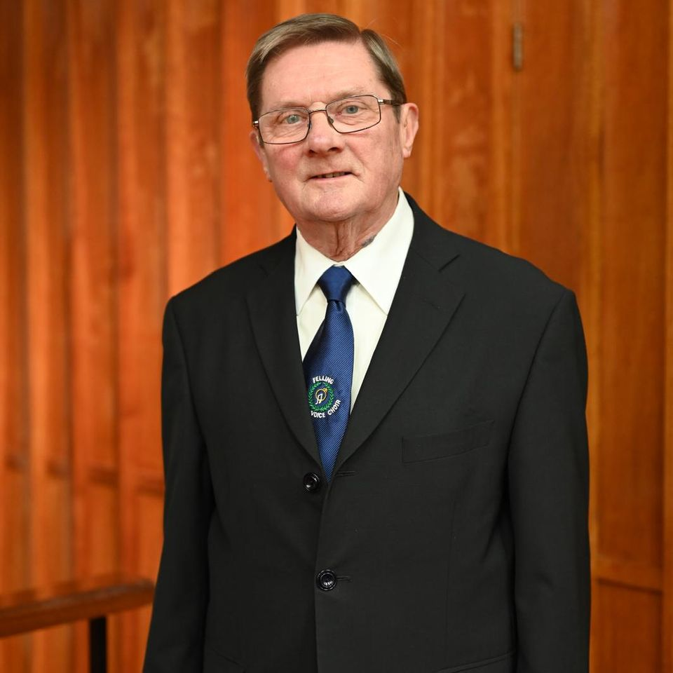
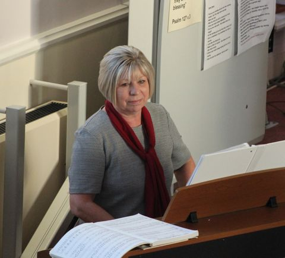
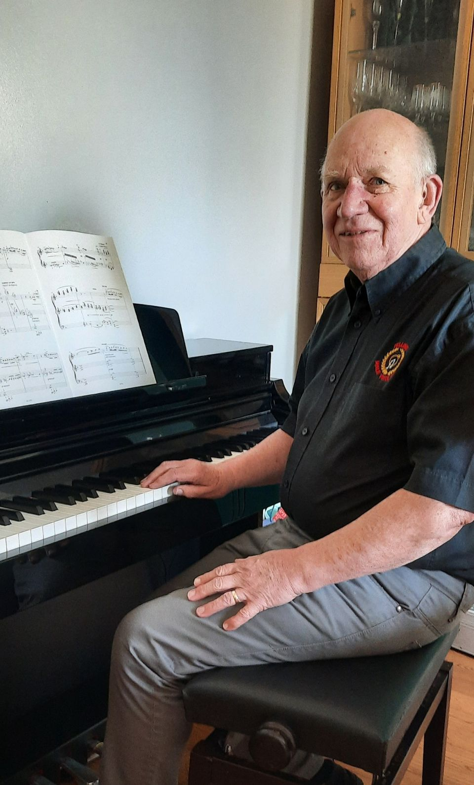

Our Story
Felling Male Voice Choir have been ambassadors of male voice singing for over 100 years. It all began in 1920 after a concert at Holly Hill Methodist Church, and we are still going strong today. From church concerts to community stages, FMVC brings a rich male voice sound built on more than a century of singing in the North East.
The choir has a reputation as one of the best in the land. We rehearse on Friday nights in a welcoming, open atmosphere — whether you're new to singing or experienced, there's a place for you. “When voices lock together, a community hears itself.”
Who's Who
Click a name to read the full write-up.

President
Stuart leads the choir as President, supporting FMVC's heritage and community presence in the North East.

Director of Music
Michael directs the choir with passion and precision, steering rehearsals and performances as Director of Music (formerly Acting Director of Music).

Principal Accompanist
Julie is the choir's Principal Accompanist, bringing assurance and talent to the piano at rehearsals and concerts at home and away.

Deputy Director
Raymond supports the musical leadership of the choir as Deputy Director, helping to shape repertoire and performances.
Felling Male Voice Choir has for many years invited a distinguished local person to be the choir's President.
In recent times the choir was served by Doctor Gordon Adam in that honorary role with great loyalty.
Since he retired, the role of President has been vacant and the choir's Committee has now decided to invite a member of the choir to take on the role.
Stuart Dearlove, who has been a member for 25 years and has served on its Committee including 12 years as Chair, has accepted the honour and hopes to serve the choir as faithfully as former chairs.
Michael Scott has been a cornerstone of Felling Male Voice Choir since 1977, making him our longest-serving active member — a title well-earned through decades of unwavering dedication.
Beyond his musical talents, Michael served the choir diligently as Secretary for over twenty years, and now continues to support the team in his role as Assistant Secretary.
His choral conducting journey began with Newcastle's Northern Opera Ltd., where he sang for over three decades. He spent the final five years as Chorus Director, helping to shape the company's artistic output until its closure in 2006.
Michael brings a wealth of experience in oratorio, opera, operetta, Gilbert & Sullivan, and musical theatre. With numerous staged performances under his belt, he's also known to step into the spotlight as an occasional baritone soloist.
In 1981, he founded The Grainger Singers — a mixed-voice choir that continues to perform across the North East. To this day, he remains at the helm as conductor, championing choral music and nurturing talent with both passion and precision.
Julie re-joined FMVC in 2015 having been a short-term accompanist in 2009 and she is, currently, Director of Music at St. Andrew's Church, Stanley.
She studied music with the late William Cowell, organist at Fulwell Methodist Church, Sunderland and has an affiliation with that church to this day. Julie also played keyboards as part of a resident band backing many acts on the North East Club circuit from 1980 to 2000.
In addition to work with the main Felling choir she also acts as accompanist to “Pieces of Eight”.
Raymond Albert Dean — BA; LTCL; ALCM; DAES — Deputy Director of Music.
He was born (1943) and raised in ‘The Felling’. His musical journey commenced when he was just seven years of age, learning to play cornet in Felling Salvation Army band.
On leaving school he served an engineering apprenticeship but was made redundant from Churchill TI in 1972. At which point he made a complete career change and took up studies at Newcastle College of Art and Technology where he gained diplomas of LTCL and ALCM. In 1982 he also gained a BA (open) studying Music and Mathematics.
He was involved in the brass band world until 1988, playing baritone with Westoe Colliery Band. He went into a teaching career, teaching Music, Mathematics and Information Technology in Secondary Education during which time he also started teaching music in a private capacity. Mainly pianoforte and brass instruments.
He has been organist (self-taught) at the Church of the Ascension, Kenton, Newcastle for over 20 years. He has also been keenly interested in Irish Studies playing flute and tin whistle and studying the Irish language.
Rehearsals
Fridays 19:00–21:30
Felling Methodist Church, Coldwell St, Felling, Gateshead, NE10 9HH
We welcome new members — come along and find your voice section. Community ethos: open and welcoming.